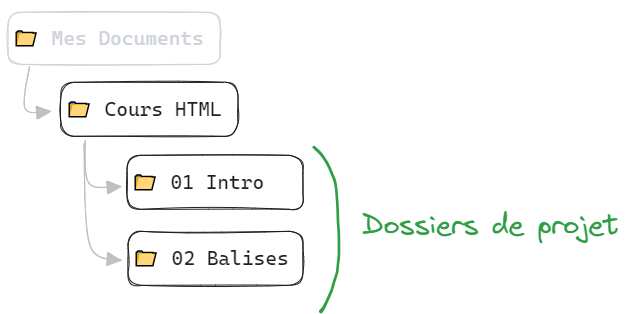

Introduction au HTML
Définition
HyperText Markup Language
Le HTML est le langage de balisage conçu pour représenter les pages web.
Il permet :
- d'écrire de l'hypertexte
- de structurer sémantiquement une page web
- de mettre en forme du contenu
- de créer des formulaires de saisie ou encore d'inclure des ressources multimédias dont des images, des vidéos, et des programmes informatiques.
C'est le langage qui se cache derrière toute page web publiée sur Internet
Fonctionnement
Le navigateur Web (Chrome, Firefox, …) émet une requête HTTP vers l'adresse
https://wikipedia.org
Le serveur renvoie la réponse HTTP au format HTML
Le navigateur reçoit le HTML et l'affiche à l'utilisateur
C'est le navigateur Web qui interprête le langage HTML
On dit que c'est un langage côté client (par opposition au serveur)
Outils
Pour développer en HTML, nous allons avoir besoin au minimum …
- d'un navigateur Web
- d'un IDE (environnement de développement)
Navigateur
Pour le navigateur Web, nous en choisirons un basé sur Webkit (ex: Chrome, Edge)
Par ailleurs, leurs outils de développement intégrés sont excellents
IDE
Nous choisirons Visual Studio Code (souvent abrégé VSCode) qui est la solution la plus populaire à ce jour

http://code.visualstudio.comTéléchargez et installez VSCode
Découvrons l'interface ensemble …
VSCode dispose d'un marketplace qui offre un large choix d'extensions pour apporter des fonctionnalités supplémentaires à l'éditeur
Une extension souvent utile lorsqu'on développe des pages Web est Live Server
Elle permet de lancer un serveur Web local pour afficher nos pages Web
Organisation
Il est important de s'organiser correctement sur sa machine pour ne pas perdre le fil
Dans le cadre de ce cours, nous travaillerons principalement par dossiers de projet
L'architecture proposée est la suivante :
Nous pourrons ouvrir ces dossiers directement dans VSCode pour profiter d'une expérience de développement complète
Notre 1ère page Web
Les pages Web sont des fichiers texte enregistrés avec l'extension .html
Par défaut, la page principale d'un site Web se nomme toujours index.html
- Créez le dossier de projet suivant :
…/Cours HTML/01 Intro/
- Ouvrez ce dossier dans VSCode
(Si l'IDE vous demande de faire confiance au répertoire, cocher la case et choisissez OUI)
Dans la barre latérale, vous voyez l'arborescence de votre projet. Cliquez sur le bouton « + » pour créer
un nouveau fichier nommé index.html
Écrivez dans le contenu du fichier le code ci-après et sauvegardez
Hello World
Bienvenue sur ma première page HTML
Pour charger cette page Web dans le navigateur, nous allons utiliser l'extension Live Server précédemment installée
Dans le coin inférieur droit de la fenêtre, cliquez sur le bouton Go Live
Cela va démarrer un serveur Web local à l'adresse http://localhost:5500/
file:///c:/Documents/Cours HTML/01 Intro/index.html
À noter qu'il est possible d'ouvrir une page .html directement depuis le navigateur, mais
cette approche est déconseillée car le navigateur n'exécute pas la page dans le contexte HTTP, et bloquera
de nombreuses fonctionnalités par défaut
Anatomie du langage HTML
Les balises
Le langage HTML est composé de balises
Une balise dispose d'un nom et est encadrée par des chevrons
< et
>
<div>
Balise "div"
Les balises sont des marqueurs qui permettent de délimiter des portions de texte afin de définir le sens du contenu
Dans ce cas là, elles fonctionnent par paires
<p>Paragraphe de texte</p>
Une balise peut aussi être utilisée seule, pour représenter un élément unique tel qu'une image ou une zone de saisie
On dit alors qu'elle est orpheline
<img>
Il est possible de les imbriquer les unes dans les autres
Du texte
Encore du texte
Toujours du texte

Remarquez qu'à chaque imbrication, on saute une ligne et on décale le contenu
On appelle cela l'indentation du code
Les Attributs
Nous avons vu que les balises avaient des noms (div, p, img)
Elles peuvent également avoir des attributs qui vont leur préciser des informations supplémentaires
Les attributs s'écrivent entre les chevrons juste après le nom de la balise
Ils disposent d'un nom et d'une valeur
<balise attribut="valeur">
Une balise peut avoir une infinité d'attributs
<balise attribut1="valeur" attribut2="valeur">
Voici un exemple concret avec la balise d'image pour laquelle on peut configurer le nom du fichier à afficher

Maintenant que nous sommes au fait de la syntaxe des balises, nous allons en découvrir plusieurs ensemble …
Balises HTML
Il existe un grand nombre de balises HTML dans la spécification du langage, et il est difficile de toutes les connaitre par coeur
Nous démarrerons en abordant les balises les plus courantes que l'on est amené à utiliser dans une page Web
Les titrages
Une page Web, comme tout document, propose du contenu textuel hiérarchisé avec des titres
Titre de niveau 1
Le langage prévoit jusqu'à 6 niveaux de titre
(jusqu'à "H6")
Titre de niveau 1
Titre de niveau 2
Titre de niveau 3
Titre de niveau 4
Titre de niveau 5
Titre de niveau 6
Essayez-les dans votre page index.html et observez le résultat dans le navigateur …
Notez que les éléments s'affichent par défaut les uns au dessus des autres de façon verticale, comme des blocs
C'est le comportement des balises de type bloc
Les paragraphes
La balise de paragraphe <p> est une autre balise de type bloc qui permet de
délimiter un bloc
de texte
Commande n°123456
Veuillez trouver ci-dessous les informations relatives à
votre commande
Numéro de commande : 123456
Les liens
La balise de lien <a> permet d'établir des liens entre différentes pages Web
Les liens indiquent au navigateur d'effectuer une nouvelle requête HTTP pour changer de page
Cette balise ne produit pas de retour à la ligne et s'affiche "en ligne" à la suite du contenu
C'est une balise de type inline
Vous pouvez consulter les
conditions générales de vente
Ce code HTML représente un paragraphe contenant un lien qui redirige vers la
page
cgu.html
On appelle cela un lien relatif, car il redirige vers une page interne du site Web
Rendez-vous sur le moteur de
recherche Google
Ce code affiche un lien qui redirige vers Google
On appelle cela un lien absolu, car il redirige vers une page externe au site Web
Images
La balise d'image <img> permet d'afficher une image dans une page Web
C'est une balise orpheline, et qui est également de type inline

L'attribut src indique le chemin vers le fichier image à afficher
L'attribut alt indique le texte alternatif à afficher si l'image ne peut pas
être chargée
Vous devez toujours préciser l'attribut "ALT" pour les images de contenu en HTML
C'est une bonne pratique pour l'accessibilité des personnes malvoyantes qui utilisent des lecteurs d'écran
(Ne pas préciser cet attribut indique que l'image n'a aucune importance pour le contenu)
Listes
Le langage HTML permet de créer des listes de 2 types :
- Les listes à puces
- Les listes numérotées
Listes à puces
Nos compétences :
- HTML
- CSS
- JavaScript
La balise <ul> désigne une liste non ordonnée
Les balises <li> designent les items de la liste
Ce sont toutes deux des balises de type bloc
Listes numérotées
Recette :
- Préchauffer le four à 180°C
- Mélanger les ingrédients
- Enfourner pendant 30 minutes
Commentaires
Les commentaires sont des annotations que l'on peut ajouter dans le code HTML. Ils ne sont pas interprétés par le navigateur et permettent de documenter le code
Les commentaires sont délimités par les marqueurs spéciaux <!-- et -->
Tout ce qui se trouve entre ces marqueurs sera ignoré par le navigateur Web
Voici un paragraphe de texte
Anatomie d'un document HTML
Écrire des balises HTML dans un fichier texte ne suffit pas à en faire une page Web
Il faut également respecter une structure bien précise
Voici comment combiner des balises pour créer un document HTML valide
<!DOCTYPE html>
<html>
<head>
</head>
<body>
</body>
</html>
<!DOCTYPE html>
<html>
<head>
Ma page test
</head>
<body>
Voici ma page web
</body>
</html>
Le "DOCTYPE" est une instruction qui indique au navigateur que le document est au format HTML
Il est obligatoire pour que le navigateur puisse interpréter le code correctement
<html> est le contenant de tout le code de la page. C'est l'élément racine du document
<head> est un conteneur pour les informations relatives à la page et
qui ne seront pas
affichées à l'écran (mots clés, description, …)
<body> est le conteneur de tout le contenu visible de la page (texte, images, …)
<meta charset="utf-8"> est une balise qui indique au navigateur que le document est
encodé en UTF-8
<title> est une balise qui indique le titre de la page, celui qui
s'affiche dans l'onglet du navigateur dans lequel la page est chargée et qui est utilisé pour décrire la
page lorsque vous la marquez ou l'ajoutez aux favoris.
TP
Créez votre page de présentation en HTML
À ce stade, vous avez une idée de ce à quoi ressemble le langage et la structure d'un document HTML valide
Vous connaissez aussi la notion de balises bloc et inline
Vous allez créer une page Web nommée about.html faisant votre présentation personnelle, et
qui devra contenir les éléments suivants :
- Un titre de niveau 1 avec votre nom et prénom
- Une image de vous
- Un paragraphe de présentation de votre parcours d'études
- Une liste de vos diplômes déjà obtenus (quels qu'ils soient)
- Un paragraphe expliquant l'une de vos passions (ex: musique), avec au moins un lien absolu
Correction type
Afin de compléter et consolider les éléments vus ensemble, vous allez maintenant lire la page suivante du MDN (Mozilla Developers Network)